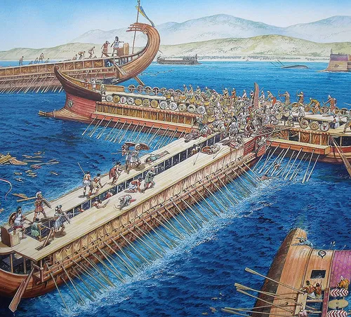

Battle of Salamis (c. 480 BCE)

The Battle of Salamis took place in 480 BCE during the Greco-Persian Wars. It was a major naval battle fought in the narrow waters between the island of Salamis and the Greek mainland, near the port of Piraeus. The Greek fleet faced a much larger Persian navy commanded under King Xerxes I. Despite being outnumbered, the Greeks achieved a decisive victory that changed the course of the war.
By this time, Xerxes and his army had advanced through much of Greece following their victory at Thermopylae. The Persian fleet also controlled large parts of the surrounding waters, placing the smaller Greek navy in a difficult position. The Greek fleet consisted mainly of triremes, fast warships powered by rows of oars and equipped to attack enemy vessels.
The Greek commander, Themistocles, developed a strategy that took advantage of the narrow straits at Salamis. Instead of fighting the Persian fleet in open water, where its greater numbers would have been an advantage, he encouraged the Persians to enter the confined channel. The crowded conditions made it difficult for their larger fleet to manoeuvre and coordinate its movements.
Once the Persian ships entered the straits, the Greek triremes attacked, ramming enemy vessels and boarding them during the confusion. The Persian fleet suffered heavy losses, while the Greeks managed to preserve much of their own navy. Although the exact number of ships lost is uncertain, the battle was a significant defeat for Xerxes and his forces.
The victory at Salamis was a turning point in the Greco-Persian Wars. Without a secure naval advantage, Xerxes found it more difficult to support his army and continue his campaign in Greece. He eventually withdrew from Greece with part of his forces, while the remaining Persian army was defeated the following year at the Battle of Plataea in 479 BCE.
Salamis demonstrated the importance of naval strategy and cooperation between Greek city-states. It also strengthened Greek confidence and helped protect their independence from Persian rule. The battle remains one of the most famous naval victories in ancient history.